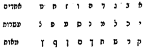
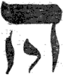

Pardes Rimmonim, English translation with the Hebrew.
We named it "The Gate of Manifestations" because in it is explained the multiplicity of manifestations in the sefirot, despite their being, in themselves, ten alone; and likewise certain known manifestations of the sefirot. Its chapters number four.
14:1:1 The Fourteenth Gate: The Gate of Manifestations.
שער ארבעה עשר הוא שער המציאות:
14:1:2 What is intended in this Gate is to explain the matter of the manifestations of the Sefirot: for although they are only ten, they have manifestations within manifestations. And further, to explain known manifestations of the Sefirot, as explained in the Zohar and in the Tikkunim, with God's help.
הנרצה בשער הזה הוא לבאר ענין מציאיות הספירות כי עם היותן עשר לבד להם מציאיות לפנים ממציאיות. ועוד לבאר מציאיות ידועים לספירות כאשר נתבאר בזהר ובתיקונים בעזרת ה':
14:1:3 Chapter One:
פרק ראשון:
14:1:4 The matter of the manifestations in this wisdom is a key that is used in many of the gates of this wisdom. And the matter is that the things of holiness, of the Emanation, and of subtle spirituality are not like the matters of this low, corporeal world. For the matters of the body, being corporeal and of lesser worth: when a man wishes to perform an action on some corporeal thing other than himself, it is impossible for him to perform the action he desires unless all the manifestations of body that preceded in those corporeal things are first nullified, so that they are turned into the thing he desires in it. The illustration of this: when a man wishes to bring into existence for himself a garment to wear, behold, he shears the wool or the hair from that animal. And behold, in truth, the wool acquires a condition different from what it was, and the animal remains stripped, naked, and in want of all.
ענין המציאיות בחכמה הזאת הוא מפתח שמשתמשים בו בכמה משערי החכמה הזאת. והענין שאין דברי הקדושה והאצילות והרוחניות הדק כענייני העולם השפל הזה הגשמי כי ענייני הגוף להיותם מוגשמים פחותי הערך כאשר ירצה האדם לפעול פעולה באיזה דבר מזולתו מהגשמיים א"א לאדם לפעול הפעולה ההיא הנרצת אליו אם לא שיתבטלו קודם כל המציאות הגוף הקודמים אל הגשמיים ההם כדי שיתהפכו אל הדבר הנרצה בו. המשל בזה ברצות האדם להמציא אליו בגד ללבוש הנה יגזוז הצמר או השער מהבעל חי ההוא. והנה לפי האמת הצמר נקנה לו פעולה משונה מכשהיתה והבעל חי נשאר משולל וערום ובחוסר כל.
14:1:5 Behold, the first manifestation was nullified when it came to be acted upon into another manifestation. Afterwards that wool is further whitened; and after its whitening the first manifestation that it had while it was in the fleece does not remain, for the first body has passed and gone, and it has acquired a manifestation fairer and choicer than the first, which is the manifestation of pure, whitened wool. And when that wool is spun, its first manifestation does not remain in it, for it has already been turned into something more praiseworthy, which is the yarn. And when the garment is woven, the manifestation of the yarn does not remain, for through the work it has stripped off its first form and put on a more perfected form. And in this way, as the works multiply, the forms are stripped off, and nullified, and pass away, and are as though they had not been, and its first forms will not be remembered.
הנה שנתבטלה מציאות ראשון כאשר בא להתפעל אל מציאות זולתו. אח"כ עוד ילבן הצמר ההוא והנה אחר ליבונה לא ישאר מציאות הראשון אשר היה לה בהיותה בגיזה כי הגשם הראשון חלף הלך לו ונקנה אליה מציאות יפה ונבחר מהראשון והוא מציאות הצמר הזך המלובן. וכאשר יטוו הצמר ההוא לא ישאר בה מציאותה הראשון כי כבר נהפך אל דבר יותר משובח והוא המטווה. וכאשר יארוגו הבגד הנה לא ישאר מציאות המטווה כי ע"י המלאכה פשט צורתו הראשונה ולבש צורה יותר מתוקנת. ועל הדרך הזה כפי שיתרבו המלאכות יתפשטו הצורות ויתבטלו ויעברו והיו כלא היו וצורותיו הראשונות לא תזכרנה.
14:1:6 And behold, this matter is in the accidents of bodies. But the things of holiness, of spirituality, and of the Emanation are the opposite of this matter, for these do not have its accidents. And although the kinds of the emanated and spiritual things spread forth and put on a form more revealed than they were before their spreading, their first manifestations are not on that account nullified, God forbid; but on the contrary, the things multiply without end, rising without limit. And even if the subtle spiritual thing is changed into a more revealed manifestation, nevertheless its first manifestation does not move from its place, and its seat is not vacant. Spirituality further differs from the corporeal in this matter: for the corporeal and all its newly arising manifestations are superior to the preceding ones, in particular in the actions intended by human beings; for the more it is acted upon, the nearer it comes to what is desired, and this is its praise. And not so the spiritual; but on the contrary, the more it is revealed, the preceding manifestation is the principal and the root of its manifestations that arise and are emanated. And the root draws from its root, and its root from its root, according to the multitude of manifestations, until this depends on this and this depends on this, up to what precedes them all. And the higher they rise, the more praiseworthy they are, near to the source and the true root, which is the Root of all roots and the Source of all manifestations, the King of kings of kings. And a proof for the matter of manifestation is from the vessels of the Sanctuary and the articles of holiness: for if they replace them with new ones, the first ones are stored away, for their holiness still stands in them; for there remains in them a subtle holiness and spirituality, and its manifestation stands in its place; and the holiness remaining in them is the subtlest of the subtle, so that the eye cannot judge them at all. And even if the proof does not resemble the thing illustrated in every respect, because there the preceding is principal to what is emanated, as we explained, and this is not so in the illustration (for certainly the articles of holiness that stand to serve are more praiseworthy than those that have already been set aside), nevertheless the law is a true law, even if they do not resemble in everything. And the reason is that the articles of holiness are corporeal, and for the spiritual we have no apprehension by which to illustrate it. And for this reason our Sages, of blessed memory, expounded (Megillah 28a) "and I will make your sanctuaries desolate" (Lev. 26:31): even when they are desolate, they stand in their holiness. Because the Shekhinah dwelt there, something of holiness remained in them, which the eye cannot apprehend except with the eye of the intellect, according to our holy Torah. And according to these words was the matter in the Sefirot: for when the will arose before Him to emanate them, there were formed the manifestations of the subtle, concealed Tzachtzachot, as we explained at length in the Gate of Tzachtzachot. And from that subtle manifestation the grades descended in a chain down to the revealing in thought, and there too second manifestations were formed. And we said "second" because one is not to investigate what is between Ein Sof and Keter at all, except that they are in subtlety in the Ein Sof, and they are emanated in Keter, which is what we called the manifestation of the revealing in thought. And the subtlety that is in the Ein Sof draws effluence to the subtle roots that are in Keter. And so manifestations were emanated from grade to grade. And the nearer they come to the Emanator they are called "face," and the farther they go they are called "back." And therefore [there are] "how many faces within the awesome faces, and how many backs behind backs that are not seen"; for the Sefirah is not one substance of which one judges only one matter. Rather, in each and every Sefirah [there are] how many manifestations, how many worlds, how many matters, which the intellect cannot apprehend. Their matter is revealed in the Torah, and the intellect of man cannot encompass them; for how is it possible that an effect of an effect, the smallest of the small, could encompass the cause of its cause, and not the cause of its cause alone, but descending from cause to effect without end? Except that the Holy One, blessed be He, wished to give merit to Israel, and accustomed them to His Torah, etc. And nevertheless there is none who goes down to the depth of one of its secrets, because of its great concealment, except [by] this little light that comes out between the chinks and cracks of the gate, as thick as a needle; and these are the words of the divine, holy Rashbi, peace be upon him. And he taught us this matter in the Tikkunim (Tikkunei Zohar Chadash, folio 119b), and these are its words: "And how many inner Sefirot, and how many back Sefirot, and they are one upon the other; this is what is written (Eccl. 5:7), 'For one higher than the high watches, and there are higher ones over them.' And concerning them it is said, 'How many faces within the awesome faces, and how many backs behind backs that are not seen.' And these inner ones are יו"ד ה"י וי"ו ה"י, יו"ד ה"י וא"ו ה"י, יו"ד ה"א וא"ו ה"א. The back ones are י' י"ה יה"ו יהו"ה, א' א"ה אה"י אהי"ה," etc. Thus far its words.
והנה הענין הזה במקרה הגופים. אבל דברי הקדושה והרוחניות והאצילות הפך לענין הזה שאין אלו מקריו ואע"פ שיתפשטו מיני הנאצלים והרוחניים וילבשו צורה יותר מתגלות מכמו שהיו קודם התפשטותם, לא מפני זה יתבטלו מציאותם הראשונים ח"ו אלא אדרבה יתרבו הדברים עד לאין תכלית מתעלות עד לאין קץ. ואף אם יתחלף הדק הרוחני אל מציאות יותר מתגלה עכ"ז מציאותו הראשון לא יזוז ממקומו ולא יפקד מושבו. עוד נשתנתה הרוחניות בענין זה מן הגופני כי הגופני וכל מציאותיו המתחדשים הם בעלוי אל הקודמות בפרט בפעולות המתכוננות בבני אדם, כי כל עוד שיתפעל יתקרב אל הנרצה וזהו שבחו. ואין כן הרוחני אלא אדרבא כל עוד שיתגלה, המציאות הקודם הוא עיקר ושרש אל מציאיותיו המתחדש והמתאצל. והשרש שואב משרשו ושרשו משרשו לפי רבוי המציאיות עד שזה תלוי בזה וזה תלוי בזה עד הקודם אל כלם. וכל עוד שיעלו הם משובחים קרובים אל המקור והשורש האמיתי שהיא שרש כל השרשים ומקור כל המציאיות מלך מלכי המלכים. וראייה אל ענין המציאות הוא מכלי המקדש ותשמישי קדושה כי אם יחליפום בחדשים הראשונים נגנזים כי עדיין קדושתם בהם עומדים כי נשאר בהם קדושה דקה ורוחניות ומציאותו במקומו עומד וענין הקדושה הנשארת בהם דקה מן הדקה עד שאין העין יכולה לשפוט בהם כלל. ואף אם לא יהיה הראיה דומה אל הנמשל מכל וכל מפני ששם הקודם עקר אל המתאצל כדפריש' ואין זה במשל, כי ודאי יותר משובחים הם תשמישי קדושה העומדים לשרת מאותם שכבר נתבטלו. (על) [עם] כל זה הדין דין אמת ואף אם לא ידמו בכל והטעם שתשמישי קדושה הם גופניים וברוחני אין לנו השגה להמשילו. ומן הטעם הזה דרשו רז"ל (מגילה דף כ"ח) והשימותי את מקדשיכם, אע"פ שהם שוממים בקדושתם הם עומדים. לפי ששרתה שכינה שם נשאר בהם דבר קדושה שאין העין יכולה להשיגו אלא בעין השכל על פי תורתינו הקדושה. וע"פ הדברים האלה היה הענין בספירות כי כאשר עלה הרצון לפניו להאצילם הנה נצטיירו מציאיות הצחצחות הדקות הנעלמות כפי שביארנו בארוכה בשער הצחצחות. וממציאות הדק ההוא נשתלשלו המדרגות עד הגילוי מחשביי ושם ג"כ נצטיירו מציאיות שני. ואמרנו שני, מפני שאין לחקור מה שבין אין סוף לכתר כלל אלא שהם בדקות באין סוף והם מתאצלות בכתר הוא שקראנו מציאות גלוי מחשביי. והדקות שבאין סוף ממשיך שפע אל השרשים הדקים שבכתר. וכן נתאצלו מציאיות ממדרגה למדרגה. וכל עוד שיתקרבו אל המאציל הם נקראים פנים וכל עוד שיתרחקו נקראים אחוריים ולכן כמה פנים לפנים הנוראים וכמה אחוריים לאחוריים [דלאו] נראים כי אין הספירה עצם אחד שלא ישפוט בו כי אם ענין אחד. אמנם בכל ספירה וספירה כמה מציאיות כמה עולמות כמה עניינים שאין השכל יכול להשיגם. נתגלה עניינם בתורה ואין שכל אדם יכול להקיפם כי איך אפשר שעלול מעלול קטן שבקטנים יוכל להקיף סבת סבתו ולא סבת סבתו לבד אלא יורד מסבה למסובב עד לאין תכלית. אלא שרצה הקב"ה לזכות את ישראל והרגילם בתורתו כו'. ועכ"ז אין מי שיורד לעומק א' מסודותיה לרוב העלמ' אם לא מעט האור הזה היוצא מבין בדקי וסדקי השער כעובי המחט והם דברי האלדיי הקדוש רשב"י ע"ה, והוא הורה לנו הענין הזה בתיקונים (תז"ח דף קי"ט ע"ב) וז"ל וכמה אינון ספירן פנימיים וכמה ספירן אחוריים ואינון דא על גב דא הה"ד כי גבוה מעל גבוה שומר וגבוהים עליהם ובגינייהו אתמר כמה פנים לפנים הנוראים וכמה אחוריים לאחוריים דלאו נראין. ואינון פנימים אלין יו"ד ה"י וי"ו ה"י יו"ד ה"י וא"ו ה"י יו"ד ה"א וא"ו ה"א. אחוריים אינון י' י"ה יה"ו יהו"ה, א' א"ה אה"י אהי"ה וכו' עכ"ל.
14:1:7 Although this passage has been explained in its place at length in the book Or Yakar, part two, nevertheless from within it a great light comes out for us toward what is intended: that the Sefirot have many aspects, matters, and manifestations, which knowledge cannot comprise, for the reason mentioned. And besides this, there are further aspects in the Sefirot, according to the aspect by which we wish to consider them: [one] is called thus, and this aspect is called thus; and this is the manifestations of the names related to each and every Sefirah, for they are many, as we shall explain in the Gate of the Glossary of Titles. And Rashbi explained it in many places; and these are his words in the Tikkunim (Tikkun 56, folio 87): "He [and] He: they are woman and her daughter, bride and her mother-in-law; according to the branches [of the tree], so are they called." Thus far its words.
עם היות שנתבאר המאמר הזה במקומו ביאור אורך בס' אור יקר חלק ב', עכ"ז מתוכו יצא לנו אור גדול אל המכוון היות לספירות כמה בחינות ועניינים ומציאיות אשר אין הדעת יכול לכוללם לסבה הנזכר. ובזולת זה יש עוד בחינות בספירות לפי הבחי' אשר נרצה להבחינן והיא נקראת כך ובחינה זו תקרא כך והיינו מציאיות השמות המתיחסים לכל ספי' וספי' כי רבים הם כאשר נבאר בשער ערכי הכנויים. וביאר אותה רשב"י במקומות רבים. וז"ל בתיקונים (תקונא נו דף פ"ז) ה"ה אינון אשה ובתה כלה וחמותה כפום ענפין [דאילנא הכי אתקריאו] עכ"ל.
14:1:8 And the intent is that Binah, which is the first He of the Name, and Malkhut, which is the final He of the Name, are sometimes called woman and her daughter, and sometimes bride and her mother-in-law. And it was difficult for him why their names change, so that they are called sometimes thus and sometimes thus. And he answered that this is not forced, for according to their branches so their names change; and the intent is, according to the change of their aspect, as will be explained in the gate mentioned. And this is a great opening and entrance in this wisdom. And there are many other distinctions; they will be explained in chapters of their own.
והכונה שהבינה שהיא ה' ראשונה של שם והמלכות שהיא ה' אחרונה של שם לפעמים יקראו אשה ובתה ולפעמים כלה וחמותה. והוקשה לו למה ישתנו שמותם להיותם נקראים לפעמים כך ולפעמים כך. ותירץ שאין זה מן הדוחק כי לפי ענפיהם כן ישתנו שמותם. והכונה לפי שנוי בחינתם כמו שיתבאר בשער הנז'. וזהו פתח ומבוא גדול בחכמה הזאת. ויש כמה חילוקים אחרים יתבארו בפרקים בפ"ע:
14:2:1 Besides the manifestation and the aspects mentioned above, there are yet other aspects. And it is that when we wish to consider the Emanation in the secret of its composition of judgment and compassion, that will be one aspect. And when we wish to consider it from the side that all of it is compassion, it will be another aspect. And likewise when we consider it from the side of each Sefirah, from the side of its action by itself, without its fellows joined to it, it will be another matter. And when we wish to join one of them, according to which one is joined, their action and their aspect will change, and the aspects will rise to ten. And likewise when we wish [to join] two, it will change according to the change of the two. The illustration: when we join Malkhut to Yesod and Hod, it is one aspect in Malkhut; and if she is joined to Yesod and Netzach, it is another aspect; and if she is joined to Hod and Netzach, it is another aspect. So the aspects rise without end and without number, in the way we explained in the Gate of Channels, chapter 5. And besides this, when we consider the whole Emanation, for example as seven Sefirot alone, or as ten together, or as the first three alone, certainly they are aspects that are not equal, and all is not one matter. And by this a Mishnah in Sefer Yetzirah will be understood, and these are its words: "Ten Sefirot belimah, and twenty-two letters of foundation: three mothers, and seven doubles, and twelve simples." Thus far its words. And it is the second Mishnah; and the one preceding it we explained in the Gate of Paths, and there, in that Mishnah, he said that they are thirty-two paths. And now in this Mishnah he comes to explain their division and their number: since the Sefirot are only ten, how are the paths thirty-two? And he said that they are ten Sefirot and twenty-two letters, etc. And the matter is that the relation of all of them together is not equal to [what it is] when they are seven alone, for the shining of these is not like the shining of those; and this is examined in several ways, whether by way of likeness or by way of reckoning. And the illustration of this: the Sefirot are ten, and each one is included of ten, as is known; behold, they rise to a hundred. And their reckoning will rise without end in the reckoning of tens and hundreds, for each part is also included of ten, without end; for there is no part of which we say, this is Keter alone and this is Chokhmah alone, as we explained in the Gate of Essence and Governance, chapter 2. And this is not [so] when we consider them relative to the seven, for [then] we say seven times seven, or seven times ten; and their reckoning will rise in another way, which is by way of sevens, although it too rises without end.
בזולת המציאות והבחינות הנזכרות למעלה, עוד יש ויש בחינות אחרות. והיא כי כאשר נרצה להבחין האצילות בסוד הרכבתה מדין ורחמים, זו יהיה בחינה אחת. וכאשר נראה להבחינו מפאת שכולם רחמים, יהיה בחינה אחרת. וכן כאשר נבחינה מפאת כל ספירה מצד פעולתה בפ"ע בזולת שיצטרף אליה חברותיה, יהיה ענין אחר. וכאשר נרצה לצרף אחד מהם לפי אות שנצטרפה, תשתנה פעולתם ובחינתם ויעלו הבחינות אל עשר. וכן כשנרצה אל שתים, תתחלף לפי חלוף שתיהם. המשל כשנצטרף מלכות אל יסוד והוד היא בחינה אחת במלכות, ואם נצטרפה אל יסוד ונצח היא בחינה אחרת, ואם נצטרפה אל הוד ונצח היא בחינה אחרת. כך יעלו הבחינות לאין תכלית ולאין מספר על דרך שפי' בשער הצינורות בפ"ה. ובזולת זה כאשר נבחין כל האצילות המשל לז' ספירות לבדן או על י' ביחד או ג' ראשונות לבדן, ודאי הם בחינות שלא ישתוו ואין הכל ענין א'. ובזה יובן משנה אחת בס"י וז"ל י"ס בלימה וכ"ב אותיות יסוד ג' אמות וז' כפולות וי"ב פשוטות עכ"ל. והיא משנה שניה והקודמת אליה בארנוה בשער הנתיבות, ושם במשנה ההיא אמר שהם ל"ב נתיבות. ועתה במשנה זו בא לבאר חילוקם ומספרם אחר שהספירות אינם כ"א עשר איך הנתיבות הם ל"ב, ואמר שהם י"ס וכ"ב אותיות וכו'. והענין כי אין יחס כלם ביחד שוה אל כאשר יהיו ז' לבד כי אין הארתם של אלו כהארתם של אלו, וזה יובחן על כמה דרכים אם בדרך הדמיון אם בדרך החשבון. והמשל בזה הספי' הם י' וכל א' כלולה מי' כנודע. הנה יעלו לק'. וזה יעלה חשבונם לאין תכלית בחשבון העשריות והמאות כי כל חלק ג"כ כלול מי' עד אין תכלית. כי אין חלק שנאמר זה כתר לבדו וזה חכמה לבדה כדפי' בשער מהות וההנהגה פ"ב. ואין זה כשנבחינם בערך השבעה כי נאמר ז' פעמים ז' או ז' פעמים י', וזה יעלה חשבונם על דרך אחרת שהוא על דרך השביעיות עם היות שג"כ יעלה לאין תכלית.
14:2:2 And behold, the reckoning of ten will not resemble the reckoning of seven. Further, by way of likeness: when we wish to liken the ten colors that are in the Sefirot, behold, they will combine, and the colors will rise in a manner fairer and more praiseworthy in the multitude of its colors than what would rise if they were only seven; for the combination of the colors would not yield as praiseworthy a color as when they are ten. Further, we can give this parable in a manner more fitting to the thing illustrated: if the great theriac is made, which has many kinds of drugs in it, its virtue will be greater than what there will be in the theriac of four kinds; for this one helps against the deadly, venomous poison, and the small one helps, but not so much; and this is clear. And in this way we compare it to the Sefirot, after we know their division into judgment and compassion, as came before us in the Gate of Essence and Governance.
והנה לא ידמה חשבון הי' עם חשבון הז'. עוד על פי הדמיון כאשר נרצה לדמות הי' גוונים שבספירות הנה יצטרפו ויעלו הגוונים באופן יותר נאה ומשובח ברבוי גווניו ממה שיעלה אם לא היו כ"א ז', שלא יעלה הצטרפות הגוונים גוון משובח כמו בהיותן עשר. עוד נוכל להמשיל המשל הזה באופן יותר מכוון אל הנמשל אם יעשה התריאק"ה הגדולה אשר יש בה כמה מיני סמים יהיה מעלתה יותר גדולה מה שלא יהיה בהתריאק"ה של ארבעה מינים, כי זו תועיל לסם המות הארסי הממית והקטנה תועיל אבל לא כ"כ וזה מבואר. ועד"ז נקיש בספירות אחרי שידענו חלוקם בדין ורחמים כמו שקדם לנו בשער מהות והנהגה.
14:2:3 And behold, when the compassion of the first three is with the seven, the blending will incline more to compassion; and the reason is that the compassion is simple in the blending. And when the first three are alone, the compassion will spread more and more, and the whole blending will incline to compassion, which will not be so when they are joined to the last seven Sefirot. And when the seven are alone, then the blending inclines more to judgment than [in] the two preceding arrays. And with this preliminary this Mishnah will be understood. For there are four arrays in the thirty-two paths, and all in the very substance of the Sefirot. The first array is the blending of all ten together, and that is the ten Sefirot mentioned in our Mishnah. Further, the second array, and they are the three mothers, which are Alef Mem Shin, which are Keter, Chokhmah, Binah, which are mothers to Chesed, Din, and Rachamim, as explained in the Gate of Arbiters, chapter 3. Further, the third array, and they are the blending of the seven Sefirot alone, which are hinted at by the double letters, which are Bet Gimel Dalet Kaf Pe Resh Tav. And they are called doubles because they receive dagesh and rafeh and serve for two; and dagesh and rafeh are a hint to judgment and compassion, and a hint to the seven Sefirot of the Structure, which sometimes act in judgment and sometimes in compassion. And the twelve simples are the fourth array, which are the twelve boundaries, which are the twelve havayot, and they are the six extremities acting judgment and compassion, as will be explained at length in the Gate of Particulars of Names, on the name of seventy-two, in chapters 7, 8, 9, and 10.
והנה בהיות רחמי ג' ראשונות עם הז' יהיה המזג נוטה יותר אל רחמים, והטעם מפני היות הרחמים פשוטים במזג. וכאשר יהיו ג' ראשונות לבדם יתפשטו הרחמים יותר ויותר ויהיה המזג כלו נוטה אל הרחמים מה שלא יהיה כן בהתחברם אל ז' ספירות אחרונות. וכאשר יהיו הז' לבדם אז המזג נוטה יותר אל הדין מב' המערכות הקודמות. ובהקדמה זו תובן המשנה הזו. כי הם ד' מערכות בל"ב נתיבות והכל בעצם הספי'. מערכה ראשונה מזג כלם העשרה ביחד, והיינו י"ס הנזכרות במשנתינו. עוד מערכ' ב' והם ג' אמות שהן אמ"ש שהם כתר חכמה בינה שהם אמות אל החסד והדין והרחמים כמבואר בשער המכריעין פ"ג. עוד מערכת ג' והם מזג הז' ספירות לבדם אשר הרמז אליהם אותיות כפולות שהם בג"ד כפר"ת. ונקרא כפולות שהם מקבלות דגש ורפה וישמשו לשתים. ודגש ורפה הוא רמז אל הדין והרחמים, ורמז אל ז' ספירות הבנין שהם לפעמים פועלים בדין ולפעמים ברחמים. וי"ב פשוטות הם מערכה ד' שהם הי"ב גבולים שהם י"ב הוויות והם ו' קצוות פועלים דין ורחמים כאשר יתבאר בארוכה בשער פרטי השמות בשם בן ע"ב בפ"ז ח' ט' י'.
14:2:4 And behold, they are not the seven Sefirot, but they are the six extremities, which in known places are particular branches, as will be explained in the gate mentioned. And again we found a passage in the Zohar close to this Mishnah, in this preliminary; and it is in Parashat Pekudei (folio 227b), and these are its words, on the verse (Exod. 38:28) "And of the thousand and seven hundred and seventy-five he made hooks [vavim]," etc.: "All those Vavs Betzalel made, to give them to rest upon the female ones [nukvei, the sockets]. And they come out from the secret of the thousand, which is a complete reckoning; and seven hundred, which is a complete secret; and five likewise; and seventy, all one secret. And therefore from this secret and this reckoning he made hooks; and all was made in the secret of Vav and the image of Vav, and all in the supernal secret." Thus far its words.
והנה אינם הז' ספירות אלא הם ו' קצוות שבמקומות ידועים ענפים פרטיים כאשר יתבאר בשער הנז'. ושוב מצאנו מאמר בזהר קרוב למשנה זו בהקדמה זו והוא בפ' פקודי (דף רכ"ז ע"ב) וז"ל בפסוק ואת האלף ושבע המאות וחמשה ושבעים עשה ווים וגו'. כל אינון ווי"ן עבד בצלאל למיהב לון לאשראה על נוקבי. ונפקי מרזא דאלף דאיהו חושבן שלים, ושבע המאות דאיהו רזא שלים, וחמשה הכי נמי, ושבעים כלא רזא חדא. וע"ד מרזא דא וחושבן דא עשה ווים. וכלא ברזא דוא"ו ודיוקנא דוא"ו אתעבידו וכלא ברזא עילאה עכ"ל.
14:2:5 And the explanation: he comes to explain the matter of the Vavs in their number: that it is not fitting to believe that their weight came so by way of accident and chance, but the matter was with deliberate intent. And this is what he meant in saying "all those Vavs that Betzalel made": explanation: since Betzalel made them. And our Sages, of blessed memory, have already expounded that Betzalel knew how to permute the letters by which heaven and earth were created; and likewise the verse testified of him (Exod. 31:3), "And I have filled him with the spirit of God," etc.; and they explained that just as the creation of heaven and earth was with wisdom, understanding, and knowledge, so was the work of the Tabernacle. And the place of the dwelling of wisdom, understanding, and knowledge was upon Betzalel; and for this reason it was necessary that he knew how to permute the letters by which the world was created, since the spirituality of the letters, which are included in Chokhmah, Tevunah, and Da'at, was included in him. "To give them to rest upon the female ones," etc.: the intent is that those Vavs hinted at the male, which is Tiferet, called Vav. And although they were upon the pillars, and the pillars themselves are male, as is well known, nevertheless the principal was the Vavs, which were from the side of Tiferet, which is the principal of the Vav; and from them the effluence of the lower earth, hinted in Malkhut, was drawn; and the pillar was between them, to indicate the pillar that unites heaven and earth, as is known: "The Holy One, blessed be He, has one pillar, and Righteous is its name," etc. "And they come out from the secret of the thousand, which is a complete reckoning": explanation: it is known that all the Sefirot are included of ten; and behold, according to this they are ten times ten, rising to a hundred; and each one of the hundred is included of ten: they will rise to a thousand. And because this number includes all ten Sefirot with the inclusion of their inclusion, he called it "a complete reckoning," meaning a complete number; which is not so with other numbers, which do not include all the branches as the number thousand does. And one is not to explain that "complete number" means that the thousand is a complete number because it includes units, tens, hundreds, thousands; for the sages in the science of number have already written that the completeness of number is ten, for the reason that from ten upward is the doubling of the units and the tens, and by the joining of these parts the number rises and is multiplied without end; and if so, the complete number is ten, and this is a clear thing.
ופי' בא לבאר ענין הווי"ן במנינם שאין ראוי להאמין שבא משקלם כך על צד המקרה וההזדמן. אבל היה הענין בכונה מכוונת. וזה רצה באמרו כל אינון ווי"ן דעבד בצלאל, פי' מאחר שבצלאל עשה אותם, וכבר דרז"ל יודע היה בצלאל לצרף אותיות שבהם נבראו שמים וארץ, וכן העיד עליו הכתוב (שמות לא ג) ואמלא אותו רוח אלדים כו', וביארו כי כמו שבריאת שמים וארץ הי' בחכמה ובתבונה ובדעת כך היה מעשה המשכן. ומקום שכינת החכמה והתבונה והדעת היה על בצלאל ומטעם זה הוכרח שהיה יודע לצרף אותיות שבהם נברא העולם מאחר שרוחניות האותיות שהם נכללות בחכמה ובתבונה ובדעת היו נכללים בו. למיהב לון לאשראה על נוקבי וכו' הכונה כי אותם הווי"ם היו רומזים בזכר שהוא הת"ת הנקרא וא"ו. ואע"פ שהיו על העמודים והעמודים עצמם זכרים כמפורסם עכ"ז העיקר היו הווי"ם שהיו מצד הת"ת שהוא עיקר הוא"ו ומהם היה נמשכת השפעת הארץ התחתונה הנרמזת במלכות והעמוד היה ביניהם להורות על העמוד המייחד שמים וארץ כנודע עמוד א' יש לו להקב"ה וצדיק שמו וכו'. ונפיק מרזא דאל"ף דאיהו חושבן שלים. פי' נודע כי כל הספירות כלולות מעשר, והנה לפי זה הם י' פעמים י' עולים למאה וכל אחד מהמאה כלולה מי' יעלו לאלף. ומפני היות המנין הזה כולל כל הי"ס עם כללות כללותם קראו חושבן שלים, עניינו מספר שלם. משא"כ שאר מספרי' שאינם כוללים כל הענפים כמספר אלף. ואין לפרש שפי' מספר שלם יהיה, כי האלף מספר שלם מפני שכולל אחדי"ם עשרו"ת מאו"ת אלפי"ם, שכבר כתבו החכמים בחכמת המספר כי שלימות המספר הוא עשרה מטעם כי מי' ולמעלה הוא כפל האחדים והעשרות, ובחבור החלקים האלה יעלה ויכפל המספר לאין תכלית, וא"כ המספר השלם הוא העשר וזה דבר ברור.
14:2:6 And further, we can explain it in this way: in the alphabet the number is found up to nine hundred, and from there it turns the thousands back to units. So according to this the thousand is the complete number, which embeds the end of the number in its beginning. And we shall depict here a fine figure by which our intent will be explained in brief, thus:

And behold, when the hundreds are completed, the number of the thousands is equal to the units; and the Alef is what embeds its end in its beginning; for אל"ף [alef] is אלף [elef, thousand], is פלא [pele, wonder]; and it is the Supernal Keter, which embeds its end in its beginning and its beginning in its end, in the secret of אי"ן / אנ"י [ayin, Nothing / ani, I], which we explained in Gate Three, and likewise we shall explain it in the Gate "From Below to Above." And for this reason the Alef is called a complete number; and it is the drawing forth of Tiferet from Keter, for the inclusion of the Sefirot of ten is through Chokhmah, and all the more in its ascent from ten to ten, as we explained. "And seven hundred, which is a complete secret": he was precise not to say "complete number," as he said above, because it is not complete for all of them; but he said "a complete secret," because the seven Sefirot are full and complete in the whole inclusion of ten (a word is missing) of ten, in the way of the preceding ten; except that the foundation of the preceding ones is ten, and therefore they rose to a thousand, and the foundation of these is seven, and therefore they rose only to seven hundred. And therefore he did not say "complete number," because the number ten was not completed. And it is called complete for the reason of the completeness of each one of its Sefirot in a hundred gates; and for this he said "a complete secret." "And five likewise": explanation: for five too are in the secret of the Vav, as the number of the Sefirot, in the secret of the inclusion of the seven in five, as we explained in the gates. And likewise when we remove from the count of the seven the pillar and the socket, five remain. "And seventy, all one secret": explanation: for the seventy too is in the secret of seven hundred, except that these are included in a great inclusion, and those are included in one inclusion only, that is, each one of the seven is included of ten: the seven turn out to rise to seventy. "And therefore from this secret and this reckoning he made hooks": explanation: to hint at this great secret, that Tiferet be included of all these aspects. "And all in the secret of Vav," etc.: it was difficult for him: for the Alef is a hint in all ten, and the seven hundred and seventy are in the seven, and the five likewise; and if so, what relates this number to Tiferet? And to this he answered, "and all in the secret of Vav"; and a proof for this is their form, for they were made like a Vav; except that it is Tiferet when it is included of all these manifestations. And so these [hooks] turn out to be in the secret of the upper ones in their form, their hinting, their place, and their reckoning: in their form, that they were in the form of Vav; in their hinting, for so they were hinting at Tiferet; in their place, that they stood upon the pillars, in the secret of the Vav upon the continuation of the Vav, which is Tiferet upon the Righteous One; and in their reckoning, in the secret of the thousand, and the seven hundred, and the five, and the seventy. And now there is no escaping saying that the seven hundred are not part of the thousand; rather it is a manifestation by itself, for the manifestation of the thousand is choicer than the manifestation of the seven hundred; and likewise for the seventy, and likewise for the five: each one is a manifestation by itself. And it was necessary for the matter of the Tabernacle that the Vav be included of all the manifestations, for the reason that Malkhut too should be included of all the manifestation. And the illustration of this: when we take a stone from the stones, or a piece of wood from the woods, and divide it in two, behold, of necessity those parts will be found, from the side of their unity, equal in their fibers and their figure, and this figure will not differ from that figure, for both were one piece, and one manifestation is necessary for them. And so is the matter in the emanation of Tiferet and Malkhut, since they were double-faced, as we shall explain in the Gate of the Diminishment of the Moon.
ועוד נוכל לפרשו על דרך זה כי האלפא ביתא ימצא בה המספר עד ט' מאות, ומשם יחזיר האלפים לאחדים. נמצא לפי זה האלף הוא מספר השלם הנועץ סוף המספר בתחלתו ונצייר הנה צורה יפה שבה יתבאר כונתינו בקוצר כזו:
והנה בהשלים המאות ישוה מספר האלפים אל האחדים והאל"ף הוא הנועץ סופו בתחלתו כי אל"ף הוא אלף הוא פלא והוא כ"ע הנועץ סופו בתחלתו ותחלתו בסופו בסוד אי"ן אנ"י שפי' בשער ג' וכן נבארו בשער ממטה למעלה. ולסבה זו נקרא האל"ף מספר שלם והוא המשכת הת"ת מהכתר כי כללות הספירות מי' הוא ע"י חכמה ומה גם בעלותה מי' לי' כדפי'. ושבע המאות דאיהו רזא שלים דקדק שלא אמר מספר שלם כדקאמר לעיל, מפני שאינו שלם לכלהו, פי' אבל אמר רזא שלים כי הז' ספירות הם מלאות ושלימות בכל כללות העשר (חסרה מלה) מעשר ע"ד העשר הקודמות אלא שהקודמות יסודן עשר ולכן עלו לאל"ף ואלו יסודן שבע ולכן לא עלו כ"א לשבע מאות. ולכן לא אמר מספר שלם מפני שלא נשלם מספר העשר. ונקרא שלם מטעם שלימות כל אחד מספירותיה במאה שערים ולזה אמר רזא שלים. וחמשה הכי נמי. פי' כי ה' ג"כ הם בסוד הוא"ו כמנין הספירות בסוד כללות השבעה בה' כדפי' בשערי'. וכן כשנסיר ממנין השבעה העמו"ד והאד"ן נשארו ה'. וע' כלא רזא חדא. פי' כי הע' ג"כ בסוד שבע מאות אלא שאלו כלולים בכללות גדול ואלו נכללים בכללות א' לבד דהיינו כל אחד מז' כלולה מעשר נמצאו הז' עולים ע'. ועל דא מרזא דא וחושבן דא עשה ווים. פי' לרמוז הסוד הגדול הזה שיהיה הת"ת כלול מכל הבחי' הללו. וכלא ברזא דוא"ו כו'. הוקשה לו כי האל"ף הוא רמז בכל העשר וז' מאות ושבעים הם בשבעה וה' ג"כ, וא"כ מה ייחס מספר זה לת"ת. ועל זה השיב וכלא ברזא דוא"ו, וראיה על זה צורתם שהיו עשוין כמין וא"ו אלא שהוא הת"ת בהיותו כלול מכל המציאיות האלה. ונמצאו הוויית האלה בצורת"ם ורמיזת"ם ומקומ"ם וחשבונ"ם בסוד העליונים. בצורת"ם שהיו בצורת ו', ברמיזת"ם שכן היו רומזים לת"ת, במקומ"ם שהיו עומדים על העמודים בסוד הוא"ו על משך הוא"ו שהוא ת"ת על צדיק. וחשבונ"ם בסוד האל"ף ושבע המא"ות וחמש"ה ושבעי"ם. ועתה אין להמלט שלא נאמר שאין הז' מאות מכלל האל"ף. אבל הוא מציאות בפ"ע שמציאות האל"ף נבחר ממציאות הז' מאות וכן לע' וכן לחמשה כל א' היא מציאות בפ"ע. והוכרח לענין המשכן להיות הוא"ו כלול מכל המציאיות מטעם שתהיה ג"כ המלכות כלולה מכל המציאות. והמשל בזה כשנקח אבן מהאבנים או עץ מהעצים ונחלקנו לשנים הנה בהכרח ימצאו אותם החלקים מפאת יחודם שוים בחוטיהם וציורהם ולא ישתנו ציור זה מציור זה כי חתיכה אחת היו שניהם ויוכרח להם מציאות א'. וכן הדבר באצילות הת"ת והמלכות אחר שהיו ד"ו פרצופין כאשר נבאר בשער המעוט.
14:2:7 And behold, although the Holy One, blessed be He, sawed them apart, nevertheless they are equal, like the parable we gave. And therefore, when the male is unified with the female in all his limbs with a complete and whole union, it is necessary that they be equal with a complete equality, the female receiving to the male and the male to the female, for they are like receiver and giver. And all the more since we have seen the matter of the channels, which we explained in chapter 1 of the gate we devoted to them. And therefore in the Tabernacle, to hint at all the divisions of their division, so that the union be complete, it was necessary that they be according to that number, so that the Vav be included of all the parts and aspects by which it can be considered, so that the female too may be considered in all those aspects, to receive from him. And from this reason the necessity will be understood why all that happened to Jacob happened to Joseph (Bereshit Rabbah 84:6): because Yesod unites Tiferet and Malkhut in all the parts and aspects of the two of them; and if so, it is necessary according to this that there be in it an aspect equal to the aspect of Malkhut and Tiferet, so that "the loops may be opposite" (Exod. 26:5), "and together they shall be whole at its head" (Exod. 26:24).
והנה עם היות שנסרם הקב"ה עכ"ז הם שוים כדמיון המשל שהמשלנו, ולכן בהיות הזכר מתיחד עם הנקבה בכל אבריו יחוד גמור ושלם יוכרח היותן משתווים שווי גמור מקבל הנקבה לזכר והזכר לנקבה שהם כדמות מקבל ומשפיע. ומה גם ראותינו ענין הצנורות שפי' בפ"א מהשער שיחדנו להם. ולכן במשכן לרמוז אל כל חלוקי חלוקם להיות היחוד שלם הוכרח להיותם על צד המספר ההוא כדי שתהיה הוא"ו כלולה מכל החלקים והבחינות שאפשר שתבחן כדי שהנקבה ג"כ תבחן בכל הבחינות ההם לקבל ממנו. ומזה הטעם יובן הכרח למה כל מה שאירע ליעקב אירע ליוסף (ב"ר פד ו), מפני שיסוד הוא מיחד הת"ת והמלכות בכל החלקים והבחינות של שניהם וא"כ יוכרח לפי זה היות בו בחינה שוה אל בחינת המלכות והת"ת כדי שיהיו מקבילות הלולאות ויחדיו יהיו תמים על ראשו:
14:3:1 Our intent in this chapter is to explain manifestations that are explained in some of the passages of the Zohar, which are very much needed for contemplation in this wisdom. And it is the manifestation of Binah, the manifestation of Tiferet, and the manifestation of Malkhut. As for the manifestation of Binah, there are two manifestations in her. The first, a manifestation that has no relation with the Emanation at all; and it is hinted in the manifestations of Yod, the subtle point that is in Binah. And the second, a manifestation that is related to the Emanation, from the side of the manifestation that she has. And one cannot say that the manifestation of the Yod is only in Chokhmah, and that the letter of Binah is He; for the letter of Binah is also Yod. And so it is explained in the words of Rashbi, that three Yods are the first three; and that is the aspect of Binah with the two upper ones, and she is hinted in Yod, like each one of the other upper ones. But when she emanates the Emanation in their place, then she has the aspect of the He.
כונתינו בפרק זה לבאר מציאיות מתבארים בקצת ממאמרי הזהר והם צריכין אל העיון בחכמה הזאת ביותר. והוא במציאות הבינה ובמציאות הת"ת ובמציאות המלכות. במציאות הבינה, בה שני מציאות. ראשונה מציאות שאין לו יחס עם האצילות כלל, ונרמזת במציאיות יו"ד נקודה דקה שבבינה. והשניה מציאות המתייחס עם האצי' מצד המציאות אשר לה. ואין לומר שאין מציאות היו"ד אלא בחכמה, ושאות הבינה היא ה"א. שגם אות הבינה היא יו"ד. וכן מבואר בדברי הרשב"י שג' יודין הם ג' ראשונות והיינו בחינת הבינה עם ב' העליונות והיא נרמזת ביו"ד ככל אחת משאר העליונות. אבל כאשר תאציל האצילות במקומם, אז יש לה בחינת הה"א.
14:3:2 And behold, the aspect of the Yod is called Mi [who], which is a question without an answer, because of her great concealment. And the aspect of He is hinted in Eleh [these], which are the three fathers, that is, the three Vavs that are in the form of the He, thus: ה; and the right Vav is Chesed, and its roof is Gevurah, and the hanging leg is Tiferet; and they are called Eleh. And to understand this matter well, one must contemplate what we shall write in the Gate of Names, chapters 8 and 9, and in the Gate "From Below to Above," chapter 5, on the name אלדי"ם [Elohim], which is the permutation of מ"י אל"ה [Mi Eleh]: He upon Yod, as explained in the Tikkunim many times. He means the He, which is a garment to the Yod, thus:

And therefore she is female, for the aspect of revealing caused her to be female. But before, she is Yod alone, in the secret of a point equal to the two points. But by reason of her emanation, to emanate the Emanation, the manifestation of three lines was formed in her. For when she oversees in Chesed, to pour them forth, it is necessary that there be in her the aspect of Chesed; and when she oversees in compassion, it is necessary that there be in her the aspect of compassion; and when she oversees in judgment, it is necessary that there be in her the aspect of judgment. And these three aspects that were formed in her are certainly the manifestation of the source of the three lines, which remained there in subtlety, which are root and source to the revealed ones. And there is no question to say that the fathers are not Vavs, but only Tiferet; for so they explained in the Tikkunim, apart from this inquiry, and said that the three verses וayyissa, וayyavo, וayyet (Exod. 14:19–21) are three Vavs in three fathers. And after we have explained these two manifestations in Binah, we say that both of them are also in Malkhut. And they are hinted in these two letters literally, in He and Yod: for her principal is Yod, and her manifestation that is emanated to her receives the three lines [which are Netzach, Hod, Yesod] and becomes He. And close to this matter it is explained in the Zohar (Shelach, folio 171a), and these are its words: "That child [yenuka] opened and said (Zech. 14:8): 'And it shall be on that day' [ba-yom ha-hu]: it is not known who it is. But everywhere 'on that day' is the last day. Why is it called 'that day'? But this is the secret: it is the day that holds the end to the beginning. The beginning is called hu ['he,' 'that'], as it is written (Num. 18:23), 'And the Levite, he [hu], shall do the service': the service of the Levite is to the grade called hu, hidden and stored away. And it is called hahu ['that'] to show the end of all the grades, which is the beginning, and all is one; and because it is the end, He was added to it. Jerusalem is destined to bring forth waters and to make springs flow. Here there is [room] to say: the end of all the grades is not Jerusalem. But certainly Jerusalem and that day are all one. What is [the difference] between this and that? But Jerusalem: all her holy grades, when they go around, are called Jerusalem, and so they are bounded. There are grades that go around and are called courts, these inner and these outer; and there are grades that, when they go around, are called chambers; and there are grades that, when they go around, are called Heikhal and Devir. Within all those grades there is one point: 'All glorious is the king's daughter within' (Ps. 45:14). This point is called 'that day'; and your sign: 'that too is reckoned a land of Rephaim' (Deut. 2:20). And when this day rises from within the (vaults) (lattices) of the court, the flow of waters will rise; and this flow [goes] to the former sea [ha-yam ha-kadmoni], to be like a mother whose son is between her arms, and the milk increases, and the suckling's mouth is filled, and it grows by it, and it pours the milk out into its mother's mouth. So 'half of them to the former sea'" (Zech. 14:8), etc. Thus far its words.
והנה בחינת היו"ד נקרא מ"י שהוא שאלה בלא תשובה מרוב העלמה. ובחינת ה"א הוא נרמזת באלה שהם ג' אבות דהיינו ג' ווי"ן שבצורת הה"א כזה ה', והוא"ו הימיני הוא חסד, והגג שלה הוא גבורה, והרגל התלוי הוא ת"ת. והם נקראים אלה. ולעמוד על ענין זה היטיב, צריך לעיין במה שנכתוב בשער השמות פ"ח ט' ובשער ממטה למעלה פ"ה בשם אלדי"ם שהוא צרוף מ"י אל"ה, ה' על י' כמבואר בתקונים פעמים הרבה. ירצה ה' שהוא לבוש אל היו"ד כזה
ולכן היא נקבה כי בחינת הגילוי גרמה לה היותה נקבה. אבל קודם היא י' לבד בסוד נקודה שוה אל שתי הנקודות. אבל בסבת אצילותה להאציל האצילות נצטייר בה מציאות ג' קווים. כי בהיותה משגחת בחסד להשפיעם יוכרח היות בה בחינת החסד, ובהיותה משגחת ברחמים יוכרח היות בה בחינת הרחמים, ובהיותה משגחת בדין יוכרח היות בה בחינת הדין. וג' בחינות האלה שנצטייר בה זה ודאי מציאות מקור ג' קווין שנשארו שם בדקות שהם שרש ומקור אל המתגלים. ואין שאלה לומר שהאבות אינם ווין אלא הת"ת לבד. כי כן פי' בתיקונים בזולת הדרוש ואמרו שג' פסוקים ו"יסע ו"יבא ו"יט הם ג' ווי"ם בג' אבות. ואחר שבארנו שני המציאות האלה בבינה נאמר כי גם שתיהם במלכות. והם נרמזים בשתי אותיות אלה ממש בה' וי' כי עיקרה היא יו"ד ומציאותה המתאצל אליה מקבלת הג' קווים [שהם נה"י] ונעשית ה'. וקרוב לענין זה נתבאר בזהר (שלח דף קע"א.) וז"ל פתח ההוא ינוקא ואמר, והיה ביום ההוא, לא ידיע מאן הוא. אלא בכל אתר ביום ההוא יומא בתראה איהו. אמאי איקרי יום ההוא. אלא רזא דא הוא יומא דאחיד סופא בשירותא. שירותא אקרי הוא כמה דכתיב ועבד הלוי הוא. פולחנא דלוי לדרגא דאקרי הוא טמיר וגניז ואקרי ההוא לאחזאה סופא דכל דרגין דאיהו שירותא וכלא חד ובגין דאיהו סופא איתוסף ביה ה'. זמינא ירושלם לאפקא מיין ולנבעא נביעי. הכא אית למימר סופא דכל דרגין לאו איהו ירושלם אלא ודאי ירושלם ויומא ההוא כלא חד. מה בין האי להאי, אלא ירושלם כל דרגין קדישין דילה כד אסתחרן אקרון ירושלים והכי אתתחמן אית דרגין דסחרן ואקרון עזרות אילין פנימאן ואילין לבר ואית דרגין דאקרון כד אסתחרן לשכות ואית דרגין דאיקרון כד אסתתחרן היכל ודביר. לגו מכל אינון דרגין, אית נקודה חדא כבודה בת מלך פנימה. נקודה דא אקרי יום ההוא וסימנך ההוא יקרא ארץ רפאים. וכד יקום יומא דא מגו (כיפין) (שבכין) דעזרה יקום נביעו דמיין והאי נביעו מן הים הקדמוני ליהוו כגוונא דאמא דברה בין דרועהא ומסגיאו חלבא דיניק אתמלי פומיה ואתרבי ביה אריק חלבא לפומא דאימיה. כך חציים אל הים הקדמוני וכו' עכ"ל.
14:3:3 And behold, this passage is long in its place, and we have abridged it and copied from it what we need. And the matter in brief: this yenuka was a child who departed from the world for a reason known to Him, blessed be He; and when his soul ascended to the entrance of the gates of the Garden of Eden, the cherubim, the guardians of the Garden, held him, so as not to let him enter, for a reason stated there. And meanwhile the head of the academy of the righteous was expounding on this verse, "And it shall be on that day"; and the child, from outside, objected, and these are his words: "Waters that are below: how do they rise from it to a place higher than it by many grades? And what need have those [above] of those waters? And a place from which all the springs and streams go out, and there is no ceasing to its springs and streams, is watered from a dry place? Who has seen the digging of a well give water to the spring that flows? And does Jerusalem give water to the former sea, the place from which all the waters of the world go out?" Thus far its words.
והנה המאמר הזה רב במקומו ואנו קצרנוהו והעתקנוהו ממנו הצורך אלינו. והענין בקצרה, זה הינוקא היה תנוק א' שנסתלק מן העולם לסבה ידועה אליו יתברך וכאשר עלתה נשמתו אל פתח שערי ג"ע אחזו בו הכרובים שומרי הגן לבלתי תתו להכנס לסבה שנאמרה שם ובין כך ובין כך היה ראש ישיבת הצדיקים דורש בפסוק זה והיה ביום ההוא והתינוק מבחוץ הקשה וז"ל מיין דאינון מלרע היך סלקין לעילא מיניה לאתר עילאה יתיר מיניה בכמה דרגין ומה איצטרך לון לאינון מיין. ומה אתר דכל מבועין ונחלין נפקין מיניה ולית פסיקו למבועי ונחלוי אשתקייא מאתר נגוב מאן חמא חפירא דבירא יהיב מייא למבועא דנביע. וכי ירושלם יהיב מים אל הים הקדמוני אתר דכל מימין דעלמא נפקי מתמן עכ"ל.
14:3:4 And it is a strong difficulty: for Jerusalem is Malkhut, and the former sea is Binah, and therefore it is called "former"; and how is it possible that Binah should be watered from Malkhut? And to answer this difficulty, after they brought him into the academy, he opened and said: "And it shall be on that day: it is not known," etc. For the word hu indicates the hidden [third person], and it is a title for concealment, as we shall explain in the Gate of the Glossary of Titles; and the He of knowledge [the definite article] indicates the revealed, as is well known. And behold, they are two opposites in one word. And this is what he intended in saying "hahu: it is not known who [hu] it is": explanation: hu indicates concealment, and hahu indicates revealing, and they are two opposites. And he answered: "But everywhere 'on that day'" is Malkhut, which is the last day. And although she is the attribute of night, she is also day, for there are seven days, and the name "day" is already related to her. And since she is Malkhut, it is fitting that it come with the He of knowledge, because she is revealed and known; but the word hu cannot properly be said, for it indicates concealment, as we explained. And he answered: "But this is the secret: it is the day," etc. Explanation: to indicate the manifestation of the Yod, which is a concealed manifestation that is in her. For Malkhut is beginning and ending, which is beginning and end, as we say, "the beginning of thought is the end of action": for she is above in Chokhmah, in the manifestation of Yod, and she is the end of action in Malkhut, in the manifestation of He. And he said that the concealed manifestation, which is the beginning, is called hu, which indicates beginning. And a proof is from what is written, "And the Levite, he [hu], shall do the service"; and the service of the Levite is to Binah, as we explained in the Gate of Essence and Governance, chapter 10.
והיא קושיא חזקה, כי ירושלם היא המלכות והים הקדמוני היא בינה ולפיכך נקרא קדמוני וכיצד אפשר שישוקה הבינה מהמלכות. ולהשיב על הקושיא הזאת אחר שהכניסוהו לישיבה פתח ואמר והיה ביום ההוא לא ידיע וכו' כי מלת הוא מורה על הנסתר והיא כנוי אל ההעלם כאשר נבאר בשער ערכי הכנויים וה"א הידיעה מורה על הנגלה כמפורסם. והנה הם ב' הפכים במלה אחת. וזה כיוון באמרו ההוא לא ידיע מאן הוא. פי' הוא מורה העלם, וההוא מורה התגלות, והם ב' הפכים. והשיב אלא בכל אתר ביום ההוא, הוא המלכות, שהוא יום האחרון. ואע"פ שהיא מדת לילה ג"כ הוא יום, שהרי ז' ימים הם, וכבר יתייחס אליה שם יום. ומאחר שהיא המלכות ראוי לבא בה' הידיעה מפני שהיא גלויה וידועה. אבל תיבת הוא לא יצדק שהוא מורה על ההעלם כדפי'. והשיב אלא רזא דא הוא יומא כו'. פי' להורות על מציאות היו"ד שהוא מציאות נעלם שיש בה. כי המלכות היא שירותא וסיומא שהוא תחלה וסוף כדאמרי' תחלת המחשבה סוף המעשה שהיא למעלה בחכמה במציאות יו"ד והיא סוף המעשה במלכות במציאות ה'. ואמר שהמציאות הנעלם שהוא התחלה נקרא הוא, שמורה על התחלה. וראייה ממאי דכתיב ועבד הלוי הוא, ועבודת הלוי היא אל הבינה כדפי' בשער מהות והנהגה בפ"י.
14:3:5 And behold, hu indicates the beginning, which is first and earliest; for Binah is called "the beginning that stands to be asked about," as we explained there in chapter 15. And the aspect of the revealed manifestation, which is the end of all the grades, is called hahu, with the He of knowledge. So the word hahu turns out to indicate the two manifestations together. And behold, the yenuka explained her two manifestations, in the He that surrounds the Yod, in the matter of hahu.
והנה הוא, מורה על שירותא שהוא תחלה וראשון כי הבינה נקרא שירותא דקיימא לשאלתא כדפי' שם בפט"ו. ובחי' המציאות המתגלה שהוא סוף כל דרגין נקרא ההוא בה' הידיעה. נמצא תיבת ההוא מורה על שני המציאיות יחד. והנה ביאר הינוקא ב' המציאיות שלה בה' שסביב לי' בענין ההוא.
14:3:6 And behold, the middle point is called "All glorious is the king's daughter within." And likewise it is called "the apple of the eye" [bat ayin], for it is like the pupil of the eye, a tiny, fine point, and around it three colors, which are the colors of the rainbow; they are the three fathers.
והנה הנקודה האמצעית נקרא כבודה בת מלך פנימה. וכן נקרא בת עין שהוא כבבת עין נקודה זעירא דקיקא וסביבה ג' גוונים שהם גווני הקשת הם ג' אבות.
14:3:7 And behold, this point ascends to its place, its height, to her father's house, Chokhmah, by means of the effluence of Binah, which is the mother who nurses her with the milk; and through her she is exalted, until she ascends and pours effluence even into Binah herself, as he said, "like a mother whose son," etc. And likewise she pours effluence into her literal lower manifestation (which is the He, to feed the lower ones by it); and this is "and half of them to the latter sea." And the sum of the matters: Binah has He, and her manifestation is the three fathers; and Malkhut has He, and her manifestation is Netzach, Hod, and Yesod. And these two preliminaries are explained in the Ra'aya Meheimna (Terumah, folio 158), and these are its words: "The vessel of the Holy One, blessed be He, is the Shekhinah, which is a vessel to serve her husband. She is His candelabrum, of which it is said (Ps. 119:164), 'Seven times a day I praise You,' which are Gedulah, Gevurah, Tiferet, Netzach, Hod, Yesod, and Malkhut, seven included. Of these seven grades, three branches of the candelabrum from its one side: the body and the two arms of the King; she is a lamp of commandment to illumine by them. And three branches of the candelabrum from its second side: they are the two thighs and the covenant; and she is the western lamp to illumine by them. She is called the King's candelabrum, and she is a lamp to illumine by it, the lamp of commandment, of which it is said (Ps. 19:9), 'The commandment of the Lord is pure, enlightening the eyes.' And who is the head of the candelabrum? Binah, the upper He, which has three branches, in this image, ה: three Vavs, which are the three fathers. The second He: three second branches, in this image, ה: three Vavs, which are Netzach, Hod, Yesod. Vav: the middle candelabrum, son [ben] of Yah; after his name Binah [bin-Yah] is called; he includes six branches below, in the reckoning of Vav, in his six branches. Yod: 'a woman of valor is the crown of her husband' (Prov. 12:4), the crown of the Torah scroll, in the form of Zayin. From the side of the World to Come she is not a vessel for Him, and does not serve Him, but a crown on His head. But in this world she is like this, הוה"י: she is a vessel beneath Him, His service," etc. Thus far its words. And in it, explicitly, that each of the two Hes is three Vavs. And also the manifestation of Malkhut, that she is sometimes Yod, when she ascends above; and then she is called "a woman of valor, the crown of her husband," for she is Yod, a crown upon Vav, and becomes Zayin; and she is the crown of Tiferet. And this is when she ascends to Binah to be unified with Chokhmah, from which is her manifestation, as we explained above. And now we come in a further chapter to explain further the matter of the manifestations of the Yod to Malkhut in the He, although it will be explained in the Gate of the Diminishment of the Moon.
והנה בעלות הנקודה הזאת אל מקומה הרמתה אל בית אביה חכמה באמצעות שפע הבינה שהיא האם המניק לה החלב וע"י תתעלה עד שהיא עולה והיא משפעת אפי' בבינה עצמה כדקאמר כגוונא דאימא דברה וכו', וכן תשפיע אל מציאותה התחתון שבה ממש (שהיא הה' לזון בו התחתונים) וזהו וחצים אל הים האחרון. וכלל הדברים, כי הבינה לה ה' ומציאותה ג' אבות. ולמלכות ה' ומציאותה נצח והוד ויסוד. ושתי הקדמות אלו נתבארו ברעיא מהימנא (תרומה דקנ"ח) וז"ל מאנא דקב"ה איהי שכינתא דאיהו מאנא לשמשא לבעלה איהי מנרתא דיליה דאתמר בה שבע ביום הללתיך דאינון הגדולה והגבורה והת"ת והנצח וההוד יסוד ומלכות. ז' כלילן. מז' דרגין אלין ג' קני מנורה מצדה האחד, גופא ותרין דרועי דמלכא איהו נר מצוה לאנהרא בהון. וג' קני מנורה מצדה השני, אינון תרין שוקין וברית ואיהו נר מערבית לאנהרא בהון. מנרתא דמלכא אתקריאת ואיהי נר לאנהרא ביה נר מצוה דאתמר ביה מצות ה' ברה מאירת עינים ומאן רישא דמנרתא בינה ה' עילאה דאית לה תלת קנים בדיוקנא דא ה' תלת ווי"ן דאינון תלת אבהן. ה' תניינא ג' קנים תניינין בדיוקנא דא ה' תלת ווי"ן דאינון נצח הוד יסוד. ו' מנרתא דאמצעיתא ב"ן י"ה על שמיה אתקרי בינה איהו כליל שית קנים לתתא בחשבון ו' בו' קנים דיליה. י אשת חיל עטרת בעלה תגא דס"ת בצורת זיין. מסטרא דעלמא דאתי לאו איהי מאנא לגביה ולאו משמשא לגביה אלא עטרה על רישיה אבל בעלמא דין איהי כגוונא דא הוה"י איהי מאנא תחותיה שמושא דיליה וכו' עכ"ל. ובו בפירוש כי ב' ההי"ן הם ג' ווי"ן כל אחד מהם. וגם מציאות המלכות שהיא לפעמים יו"ד בעלותה למעלה ואז היא נקראת אשת חיל עטרת בעלה שהיא י' עטרה על ו' ונעשית ז' ואיהי עטרת תפארת וזו כאשר היא עולה לבינה להתייחד עם החכמה שמשם מציאותה כדפי' לעיל. ועתה נבא בפ' זה לבאר עוד ענין מציאיות היו"ד אל המלכות בה"א עם היות שיתבאר בשער המיעוט: